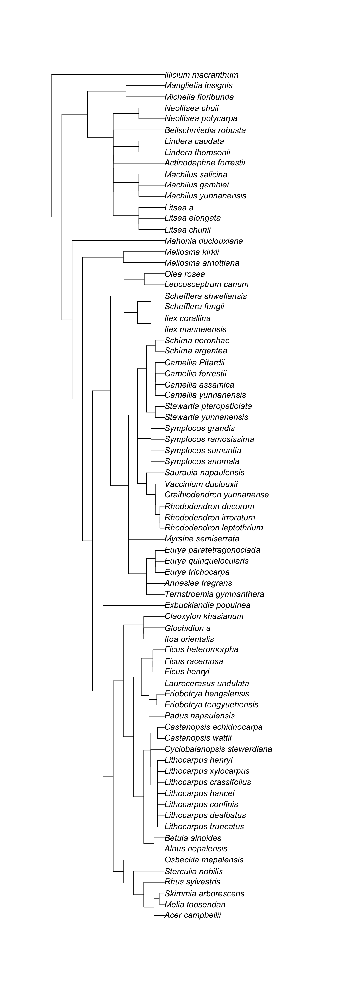

renv::restore()Diversity calculation
Course materials for 2022-11-09 AFEC at XTBG.
1 Objectives
- prepare species \(\times\) site matrix and trait data from csv files.
- calculate diversity indices.
2 Prerequisites
Clone this repo.
git clone https://github.com/mattocci27/phy-fun-div.gitThe following command install all the R packages required for this course.
Otherwise, please install those packages manually (I might miss some other packages).
install.packages("picante")
install.packages("FD")
install.packages("tidyverse")
install.packages("rmarkdown")
install.packages("DT")Load packages.
library(picante)
library(FD)
library(tidyverse)
library(rmarkdown)3 Data
3.1 Community
First, we import the community data. I prefer read_csv but read.csv is fine tool
d <- read_csv("data/samp.csv")
d# A tibble: 40 × 3
Site Species abund
<chr> <chr> <dbl>
1 Site1 Illicium_macranthum 1
2 Site1 Manglietia_insignis 0
3 Site1 Michelia_floribunda 0
4 Site1 Beilschmiedia_robusta 0
5 Site1 Neolitsea_chuii 0
6 Site1 Lindera_thomsonii 0
7 Site1 Actinodaphne_forrestii 0
8 Site1 Machilus_yunnanensis 0
9 Site2 Illicium_macranthum 1
10 Site2 Manglietia_insignis 2
# … with 30 more rowsDT::datatable(d)Then, we want to make a species \(\times\) site matrix. tapply is an useful function here.
tapply(d$abund, d$Species, sum)Actinodaphne_forrestii Beilschmiedia_robusta Illicium_macranthum
4 2 5
Lindera_thomsonii Machilus_yunnanensis Manglietia_insignis
5 2 3
Michelia_floribunda Neolitsea_chuii
2 1 samp <- tapply(d$abund, list(d$Site, d$Species), sum)
samp Actinodaphne_forrestii Beilschmiedia_robusta Illicium_macranthum
Site1 0 0 1
Site2 0 2 1
Site3 2 0 1
Site4 2 0 1
Site5 0 0 1
Lindera_thomsonii Machilus_yunnanensis Manglietia_insignis
Site1 0 0 0
Site2 0 0 2
Site3 2 2 0
Site4 2 0 1
Site5 1 0 0
Michelia_floribunda Neolitsea_chuii
Site1 0 0
Site2 2 0
Site3 0 0
Site4 0 0
Site5 0 1class(samp)[1] "matrix" "array" 3.2 Phylogeny
phylo <- read.tree("data/dummy_tree.newick")
plot(phylo)
3.3 Traits
| Abbreviation | Trait | Unit |
|---|---|---|
| LMA | Leaf mass per area | g m-2 |
| LL | Leaf lifespans (longevity) | months |
| Amass | Maximum photosynthetic rates per unit mass | nnoml g-1 s-1 |
| Rmass | Dark respiration rates per unit mass | nnoml g-1 s-1 |
| Nmass | Leaf nitrogen per unit mass | % |
| Pmass | Leaf phosphorus per unit mass | % |
| WD | Wood density | g cm-3 |
| SM | Seed dry mass | mg |
trait <- read_csv("data/dummy_trait.csv")
DT::datatable(trait)3.4 Check how traits look like first
trait_long <- trait |>
pivot_longer(LMA:SM, names_to = "trait")
trait_long# A tibble: 616 × 3
sp trait value
<chr> <chr> <dbl>
1 Acer_campbellii LMA 39.8
2 Acer_campbellii LL 7.08
3 Acer_campbellii Amass 985.
4 Acer_campbellii Rmass 54.7
5 Acer_campbellii Nmass 6.56
6 Acer_campbellii Pmass 0.42
7 Acer_campbellii WD 0.46
8 Acer_campbellii SM 0.39
9 Actinodaphne_forrestii LMA 69.2
10 Actinodaphne_forrestii LL 12.5
# … with 606 more rowsggplot(trait_long, aes(x = value)) +
geom_histogram(position = "identity") +
facet_wrap(~ trait, scale = "free")
Probably we can do log-transformation for all the traits except for WD.
trait2 <- trait |>
mutate(logLMA = log(LMA),
logLL = log(LL),
logAmass = log(Amass),
logRmass = log(Rmass),
logNmass = log(Nmass),
logPmass = log(Pmass),
logSM = log(SM)) |>
dplyr::select(sp, logLMA, logLL, logAmass, logRmass, logNmass, logPmass, WD, logSM)
DT::datatable(trait2)trait2 |>
pivot_longer(logLMA:logSM, names_to = "trait") |>
ggplot(aes(x = value)) +
geom_histogram(position = "identity") +
facet_wrap(~ trait, scale = "free")
4 First-order metrics (without phylogeny or traits)
4.1 Species richness
samp > 0 Actinodaphne_forrestii Beilschmiedia_robusta Illicium_macranthum
Site1 FALSE FALSE TRUE
Site2 FALSE TRUE TRUE
Site3 TRUE FALSE TRUE
Site4 TRUE FALSE TRUE
Site5 FALSE FALSE TRUE
Lindera_thomsonii Machilus_yunnanensis Manglietia_insignis
Site1 FALSE FALSE FALSE
Site2 FALSE FALSE TRUE
Site3 TRUE TRUE FALSE
Site4 TRUE FALSE TRUE
Site5 TRUE FALSE FALSE
Michelia_floribunda Neolitsea_chuii
Site1 FALSE FALSE
Site2 TRUE FALSE
Site3 FALSE FALSE
Site4 FALSE FALSE
Site5 FALSE TRUEapply(samp > 0, 1, sum)Site1 Site2 Site3 Site4 Site5
1 4 4 4 3 4.2 Shannon
\(H' = - \sum_i^n p_i\mathrm{log}p_i\), where \(p_i\) is the relative abundance for species i.
shannon <- function(abund) {
p0 <- abund / sum(abund)
p <- p0[p0 > 0]
-sum(p * log(p))
}apply(samp, 1, shannon) Site1 Site2 Site3 Site4 Site5
0.000000 1.351784 1.351784 1.329661 1.098612 You don’t have to reinvent the wheel.
vegan::diversity(samp, index = "shannon") Site1 Site2 Site3 Site4 Site5
0.000000 1.351784 1.351784 1.329661 1.098612 4.3 Nonmetric Multidimensional Scaling (NMDS)
res_mds <- metaMDS(samp)Run 0 stress 0
Run 1 stress 0
... Procrustes: rmse 0.07136902 max resid 0.1238712
Run 2 stress 0
... Procrustes: rmse 0.07745548 max resid 0.1372749
Run 3 stress 0
... Procrustes: rmse 0.07207206 max resid 0.1046115
Run 4 stress 0
... Procrustes: rmse 0.04579908 max resid 0.0671061
Run 5 stress 0.2297529
Run 6 stress 5.062658e-05
... Procrustes: rmse 0.1229637 max resid 0.184251
Run 7 stress 0
... Procrustes: rmse 0.09136701 max resid 0.149572
Run 8 stress 0
... Procrustes: rmse 0.06358448 max resid 0.1125462
Run 9 stress 0.1302441
Run 10 stress 9.846298e-05
... Procrustes: rmse 0.1288594 max resid 0.1986333
Run 11 stress 0
... Procrustes: rmse 0.02831245 max resid 0.04006257
Run 12 stress 0.09681012
Run 13 stress 0
... Procrustes: rmse 0.03628166 max resid 0.05523203
Run 14 stress 0
... Procrustes: rmse 0.02762022 max resid 0.04699424
Run 15 stress 0.0968105
Run 16 stress 0
... Procrustes: rmse 0.04617787 max resid 0.08217256
Run 17 stress 9.615976e-05
... Procrustes: rmse 0.0531874 max resid 0.07172835
Run 18 stress 0.0968098
Run 19 stress 0
... Procrustes: rmse 0.1135352 max resid 0.1779698
Run 20 stress 0
... Procrustes: rmse 0.03631852 max resid 0.04760688
*** Best solution was not repeated -- monoMDS stopping criteria:
15: stress < smin
3: stress ratio > sratmax
2: scale factor of the gradient < sfgrminplot(res_mds)
We can use the function ordiplot and orditorp to add text to the plot in place of points to make some more sense.
ordiplot(res_mds, type = "n")
orditorp(res_mds, display = "species", col = "red", air = 0.01)
orditorp(res_mds, display = "sites", cex = 1.25, air = 0.01)
5 Phylogenetic metrics
5.1 Branch length based metric
5.1.1 PD
res_pd <- pd(samp, phylo)
res_pd PD SR
Site1 1.000000 1
Site2 3.022727 4
Site3 2.909091 4
Site4 3.136364 4
Site5 2.454545 3You can always see the help.
?pd5.2 Distance based metric
cophenetic() creates distance matrices based on phylogenetic trees. Let’s see the first 5 species.
cophenetic(phylo)[1:5, 1:5] Acer_campbellii Melia_toosendan Skimmia_arborescens
Acer_campbellii 0.0000000 0.18181818 0.18181818
Melia_toosendan 0.1818182 0.00000000 0.09090909
Skimmia_arborescens 0.1818182 0.09090909 0.00000000
Rhus_sylvestris 0.3636364 0.36363636 0.36363636
Sterculia_nobilis 0.5454545 0.54545455 0.54545455
Rhus_sylvestris Sterculia_nobilis
Acer_campbellii 0.3636364 0.5454545
Melia_toosendan 0.3636364 0.5454545
Skimmia_arborescens 0.3636364 0.5454545
Rhus_sylvestris 0.0000000 0.5454545
Sterculia_nobilis 0.5454545 0.00000005.2.1 MPD
\(MPD = \frac{1}{n} \Sigma^n_i \Sigma^n_j \delta_{i,j} \; i \neq j\), where \(\delta_{i, j}\) is the pairwised distance between species i and j
res_mpd <- mpd(samp, cophenetic(phylo))
res_mpd[1] NA 1.568182 1.454545 1.606061 1.636364The above vector shows MPD for each site.
5.2.2 MNTD
\(MNTD = \frac{1}{n} \Sigma^n_i min \delta_{i,j} \; i \neq j\), where \(min \delta_{i, j}\) is the minimum distance between species i and all other species in the community.
res_mntd <- mntd(samp, cophenetic(phylo))
res_mntd[1] NA 1.181818 1.181818 1.295455 1.2727276 Functional metrics
6.1 Community weighted means (CWM)
\[ CWM_i = \frac{\sum_{j=1}^n a_{ij} \times t_{j}}{\sum_{j=1}^n a_{ij}} \]
or
\[ CWM_i = \frac{\vec{a_i} \cdot \vec{t}}{\sum_{j=1}^n a_{ij}}, \]
where \(a_{ij}\) is the abundance of species j in community i, and \(t_{j}\) is a trait value of species j.
tmp <- trait2 |>
filter(sp %in% colnames(samp))
tmp# A tibble: 8 × 9
sp logLMA logLL logAm…¹ logRm…² logNm…³ logPm…⁴ WD logSM
<chr> <dbl> <dbl> <dbl> <dbl> <dbl> <dbl> <dbl> <dbl>
1 Actinodaphne_forre… 4.24 2.53 5.01 2.17 0.412 -1.83 0.48 0.300
2 Beilschmiedia_robu… 3.61 3.09 5.72 3.53 1.75 -1.35 0.47 0.770
3 Illicium_macranthum 5.66 4.75 3.27 0.793 -0.288 -3.51 0.4 -0.0305
4 Lindera_thomsonii 4.47 3.70 5.49 3.02 0.626 -3.00 0.53 -0.734
5 Machilus_yunnanens… 4.26 3.36 4.65 2.69 0.239 -0.821 0.59 0.0770
6 Manglietia_insignis 6.22 5.24 3.10 0.255 -0.431 -3.91 0.45 -0.0513
7 Michelia_floribunda 4.93 3.99 3.65 2.00 0.457 -3.91 0.54 0.621
8 Neolitsea_chuii 4.65 4.18 5.20 2.30 0.489 -2.12 0.43 -1.71
# … with abbreviated variable names ¹logAmass, ²logRmass, ³logNmass, ⁴logPmass(ab <- apply(samp, 1, sum))Site1 Site2 Site3 Site4 Site5
1 7 7 6 3 # inner product
(CWS <- samp %*% as.matrix(tmp[,-1])) logLMA logLL logAmass logRmass logNmass logPmass WD
Site1 5.664348 4.746496 3.274878 0.7929925 -0.2876821 -3.506558 0.40
Site2 35.183333 29.374355 28.224437 12.3477060 3.2744092 -21.848797 3.32
Site3 31.591321 23.923913 33.559838 16.5518827 2.2664479 -14.805146 3.60
Site4 29.288871 22.431075 27.363748 11.4308299 1.3576312 -17.075208 2.87
Site5 14.782600 12.622489 13.960935 6.1065359 0.8268364 -8.622554 1.36
logSM
Site1 -0.03045921
Site2 2.64832362
Site3 -0.74426629
Site4 -0.94948167
Site5 -2.47922681(CWM <- CWS / ab) logLMA logLL logAmass logRmass logNmass logPmass WD
Site1 5.664348 4.746496 3.274878 0.7929925 -0.2876821 -3.506558 0.4000000
Site2 5.026190 4.196336 4.032062 1.7639580 0.4677727 -3.121257 0.4742857
Site3 4.513046 3.417702 4.794263 2.3645547 0.3237783 -2.115021 0.5142857
Site4 4.881479 3.738513 4.560625 1.9051383 0.2262719 -2.845868 0.4783333
Site5 4.927533 4.207496 4.653645 2.0355120 0.2756121 -2.874185 0.4533333
logSM
Site1 -0.03045921
Site2 0.37833195
Site3 -0.10632376
Site4 -0.15824694
Site5 -0.82640894The species \(\times\) site matrix and the species \(\times\) trait matrix became the trait \(\times\) site matrix.
6.2 Distance based metrics
6.2.1 Prepare a trait distance matrix
We have a data.fame or tibble object of traits. First, we need to prepare a trait matrix, then a distance matrix based on trait values.
trait_mat0 <- as.matrix(trait2[, -1])
rownames(trait_mat0) <- trait2$spLet’s see a subset of the trait matrix
trait_mat0[1:5, 1:5] logLMA logLL logAmass logRmass logNmass
Acer_campbellii 3.684118 1.957274 6.892692 4.002047 1.8809906
Actinodaphne_forrestii 4.236712 2.527327 5.006359 2.173615 0.4121097
Alnus_nepalensis 4.743366 4.010419 4.341335 2.022871 0.5007753
Anneslea_fragrans 4.190715 3.293241 5.162211 3.703522 1.4632554
Beilschmiedia_robusta 3.614964 3.085573 5.722441 3.526655 1.7544037Then, we will make trait distance matrix based on the Euclidean distance. There are other distance measures, for example Gower’s Distance, but we focus on the Euclidean distance today.
Before calculating distance, we need to make sure unit change in distances is same for different traits. We will scale trait values so that they have mean = 0 and SD = 1. (e.g., \((X_i - \mu) / \sigma\))
# (trait_mat0 - mean(trait_mat0)) / sd(trait_mat0)
trait_mat <- scale(trait_mat0)
par(mfrow = c(2, 2))
hist(trait_mat0[, "logLMA"])
hist(trait_mat[, "logLMA"])
hist(trait_mat0[, "WD"])
hist(trait_mat[, "WD"])
par(mfrow = c(1, 1))Now we can make a trait distance matrix.
trait_dm <- as.matrix(dist(trait_mat))Let’s see the first 5 species.
trait_dm[1:5, 1:5] Acer_campbellii Actinodaphne_forrestii Alnus_nepalensis
Acer_campbellii 0.000000 3.799360 5.216902
Actinodaphne_forrestii 3.799360 0.000000 2.415031
Alnus_nepalensis 5.216902 2.415031 0.000000
Anneslea_fragrans 3.175911 2.335392 3.225141
Beilschmiedia_robusta 2.545269 2.565063 3.638183
Anneslea_fragrans Beilschmiedia_robusta
Acer_campbellii 3.175911 2.545269
Actinodaphne_forrestii 2.335392 2.565063
Alnus_nepalensis 3.225141 3.638183
Anneslea_fragrans 0.000000 1.579930
Beilschmiedia_robusta 1.579930 0.0000006.2.2 MPD
mpd(samp, trait_dm)[1] NA 4.288349 3.530805 3.961248 3.438008ses.mpd(samp, trait_dm) ntaxa mpd.obs mpd.rand.mean mpd.rand.sd mpd.obs.rank mpd.obs.z
Site1 1 NA NaN NA NA NA
Site2 4 4.288349 3.738491 0.7925777 756 0.6937600
Site3 4 3.530805 3.697359 0.7932314 442 -0.2099685
Site4 4 3.961248 3.705246 0.7838004 641 0.3266171
Site5 3 3.438008 3.676012 0.9957867 440 -0.2390115
mpd.obs.p runs
Site1 NA 999
Site2 0.756 999
Site3 0.442 999
Site4 0.641 999
Site5 0.440 999Effect size (ES)
\[ ES = \frac{\bar{x_1} - \bar{x_2}}{\sigma} \sim Normal(\bar{x_1} - \bar{x_2}, 1) \]
where \(\bar{x_1}\) is the mean value of \(x_1\), \(\bar{x_2}\) is the mean value of \(x_2\), and \(\sigma\) is the standard deviation of the pooled data.
In null model analyses, we can translate this into a standardized effect size (SES):
\[ SES = \frac{obs - \bar{rand}}{\sigma_{rand}} \]
where obs is the observed metric, \(\bar{rand}\) is the mean value of the metric in null communities, and \(\sigma_{rand}\) is the standard deviation of the metric in the null communities.
6.2.3 MNTD
mntd(samp, trait_dm)[1] NA 2.504352 2.697074 1.873825 2.613585ses.mntd(samp, trait_dm) ntaxa mntd.obs mntd.rand.mean mntd.rand.sd mntd.obs.rank mntd.obs.z
Site1 1 NA NaN NA NA NA
Site2 4 2.504352 2.727396 0.5513194 371 -0.40456292
Site3 4 2.697074 2.670428 0.5398859 543 0.04935412
Site4 4 1.873825 2.696440 0.5380100 55 -1.52899585
Site5 3 2.613585 2.971227 0.7627703 342 -0.46887256
mntd.obs.p runs
Site1 NA 999
Site2 0.371 999
Site3 0.543 999
Site4 0.055 999
Site5 0.342 9996.3 Branch length based metric
6.3.1 FD
We will make a functional dendrogram using clustering methods. We use UPGMA in this example.
t_clust <- hclust(dist(trait_mat), method = "average")
plot(t_clust)
6.3.2 More functional diversity metrics
res_fd <- dbFD(trait_mat[colnames(samp), ], samp)FEVe: Could not be calculated for communities with <3 functionally singular species.
FDis: Equals 0 in communities with only one functionally singular species.
FRic: To respect s > t, FRic could not be calculated for communities with <3 functionally singular species.
FRic: Dimensionality reduction was required. The last 5 PCoA axes (out of 7 in total) were removed.
FRic: Quality of the reduced-space representation = 0.811349
FDiv: Could not be calculated for communities with <3 functionally singular species. res_fd$nbsp
Site1 Site2 Site3 Site4 Site5
1 4 4 4 3
$sing.sp
Site1 Site2 Site3 Site4 Site5
1 4 4 4 3
$FRic
Site1 Site2 Site3 Site4 Site5
NA 5.453089 2.917904 3.000656 3.553247
$qual.FRic
[1] 0.811349
$FEve
Site1 Site2 Site3 Site4 Site5
NA 0.7595456 0.6769400 0.7085376 0.7584941
$FDiv
Site1 Site2 Site3 Site4 Site5
NA 0.7301943 0.7617251 0.9166699 0.8261683
$FDis
Site1 Site2 Site3 Site4 Site5
0.000000 2.710994 1.842262 2.311159 2.042416
$RaoQ
Site1 Site2 Site3 Site4 Site5
0.000000 8.376023 4.005094 5.664467 4.379844
$CWM
logLMA logLL logAmass logRmass logNmass logPmass
Site1 1.4467783 1.17548950 -1.38976382 -1.9975087 -0.88119735 -1.2775781
Site2 0.5666449 0.55085046 -0.56218769 -0.8908026 -0.09004842 -0.8660119
Site3 -0.1410729 -0.33319385 0.27087040 -0.2062427 -0.24084641 0.2088166
Site4 0.3670613 0.03104745 0.01551229 -0.7298853 -0.34295985 -0.5718506
Site5 0.4305791 0.56352114 0.11718014 -0.5812855 -0.29128834 -0.6020974
WD logSM
Site1 -1.0150179 -0.2191496
Site2 -0.2744691 0.1665816
Site3 0.1242879 -0.2907346
Site4 -0.2341187 -0.3397288
Site5 -0.4833418 -0.97019978 Computing Environment
devtools::session_info()─ Session info ───────────────────────────────────────────────────────────────
setting value
version R version 4.2.2 (2022-10-31)
os macOS Monterey 12.6
system aarch64, darwin20
ui X11
language (EN)
collate en_US.UTF-8
ctype en_US.UTF-8
tz Asia/Shanghai
date 2022-11-04
pandoc 2.19.2 @ /opt/homebrew/bin/ (via rmarkdown)
─ Packages ───────────────────────────────────────────────────────────────────
! package * version date (UTC) lib source
P abind 1.4-5 2016-07-21 [?] CRAN (R 4.2.0)
P ade4 * 1.7-20 2022-11-01 [?] CRAN (R 4.2.0)
P ape * 5.6-2 2022-03-02 [?] CRAN (R 4.2.0)
P assertthat 0.2.1 2019-03-21 [?] CRAN (R 4.2.0)
P backports 1.4.1 2021-12-13 [?] CRAN (R 4.2.0)
P bit 4.0.4 2020-08-04 [?] CRAN (R 4.2.0)
P bit64 4.0.5 2020-08-30 [?] CRAN (R 4.2.0)
P broom 1.0.1 2022-08-29 [?] CRAN (R 4.2.0)
P bslib 0.4.0 2022-07-16 [?] CRAN (R 4.2.0)
P cachem 1.0.6 2021-08-19 [?] CRAN (R 4.2.0)
P callr 3.7.3 2022-11-02 [?] CRAN (R 4.2.2)
P cellranger 1.1.0 2016-07-27 [?] CRAN (R 4.2.0)
P cli 3.4.1 2022-09-23 [?] CRAN (R 4.2.0)
P cluster 2.1.4 2022-08-22 [?] CRAN (R 4.2.2)
P codetools 0.2-18 2020-11-04 [?] CRAN (R 4.2.2)
P colorspace 2.0-3 2022-02-21 [?] CRAN (R 4.2.0)
P crayon 1.5.2 2022-09-29 [?] CRAN (R 4.2.0)
P crosstalk 1.2.0 2021-11-04 [?] CRAN (R 4.2.0)
P DBI 1.1.3 2022-06-18 [?] CRAN (R 4.2.0)
P dbplyr 2.2.1 2022-06-27 [?] CRAN (R 4.2.0)
P devtools 2.4.5 2022-10-11 [?] CRAN (R 4.2.0)
P digest 0.6.30 2022-10-18 [?] CRAN (R 4.2.0)
P dplyr * 1.0.10 2022-09-01 [?] CRAN (R 4.2.0)
P DT 0.26 2022-10-19 [?] CRAN (R 4.2.0)
P ellipsis 0.3.2 2021-04-29 [?] CRAN (R 4.2.0)
P evaluate 0.17 2022-10-07 [?] CRAN (R 4.2.0)
P fansi 1.0.3 2022-03-24 [?] CRAN (R 4.2.0)
P farver 2.1.1 2022-07-06 [?] CRAN (R 4.2.0)
P fastmap 1.1.0 2021-01-25 [?] CRAN (R 4.2.0)
P FD * 1.0-12.1 2022-05-02 [?] CRAN (R 4.2.0)
P forcats * 0.5.2 2022-08-19 [?] CRAN (R 4.2.0)
P fs 1.5.2 2021-12-08 [?] CRAN (R 4.2.0)
P gargle 1.2.1 2022-09-08 [?] CRAN (R 4.2.0)
P generics 0.1.3 2022-07-05 [?] CRAN (R 4.2.0)
P geometry * 0.4.6.1 2022-07-04 [?] CRAN (R 4.2.0)
P ggplot2 * 3.3.6 2022-05-03 [?] CRAN (R 4.2.0)
P glue 1.6.2 2022-02-24 [?] CRAN (R 4.2.0)
P googledrive 2.0.0 2021-07-08 [?] CRAN (R 4.2.0)
P googlesheets4 1.0.1 2022-08-13 [?] CRAN (R 4.2.0)
P gtable 0.3.1 2022-09-01 [?] CRAN (R 4.2.0)
P haven 2.5.1 2022-08-22 [?] CRAN (R 4.2.0)
P hms 1.1.2 2022-08-19 [?] CRAN (R 4.2.0)
P htmltools 0.5.3 2022-07-18 [?] CRAN (R 4.2.0)
P htmlwidgets 1.5.4 2021-09-08 [?] CRAN (R 4.2.0)
P httpuv 1.6.6 2022-09-08 [?] CRAN (R 4.2.0)
P httr 1.4.4 2022-08-17 [?] CRAN (R 4.2.0)
P jquerylib 0.1.4 2021-04-26 [?] CRAN (R 4.2.0)
P jsonlite 1.8.3 2022-10-21 [?] CRAN (R 4.2.0)
P knitr 1.40 2022-08-24 [?] CRAN (R 4.2.0)
P labeling 0.4.2 2020-10-20 [?] CRAN (R 4.2.0)
P later 1.3.0 2021-08-18 [?] CRAN (R 4.2.0)
P lattice * 0.20-45 2021-09-22 [?] CRAN (R 4.2.2)
P lifecycle 1.0.3 2022-10-07 [?] CRAN (R 4.2.0)
P lubridate 1.8.0 2021-10-07 [?] CRAN (R 4.2.0)
P magic 1.6-0 2022-02-09 [?] CRAN (R 4.2.0)
P magrittr 2.0.3 2022-03-30 [?] CRAN (R 4.2.0)
P MASS 7.3-58.1 2022-08-03 [?] CRAN (R 4.2.2)
P Matrix 1.5-1 2022-09-13 [?] CRAN (R 4.2.0)
P memoise 2.0.1 2021-11-26 [?] CRAN (R 4.2.0)
P mgcv 1.8-41 2022-10-21 [?] CRAN (R 4.2.2)
P mime 0.12 2021-09-28 [?] CRAN (R 4.2.0)
P miniUI 0.1.1.1 2018-05-18 [?] CRAN (R 4.2.0)
P modelr 0.1.9 2022-08-19 [?] CRAN (R 4.2.0)
P munsell 0.5.0 2018-06-12 [?] CRAN (R 4.2.0)
P nlme * 3.1-160 2022-10-10 [?] CRAN (R 4.2.2)
P permute * 0.9-7 2022-01-27 [?] CRAN (R 4.2.0)
P picante * 1.8.2 2020-06-10 [?] CRAN (R 4.2.0)
P pillar 1.8.1 2022-08-19 [?] CRAN (R 4.2.0)
P pkgbuild 1.3.1 2021-12-20 [?] CRAN (R 4.2.0)
P pkgconfig 2.0.3 2019-09-22 [?] CRAN (R 4.2.0)
P pkgload 1.3.1 2022-10-28 [?] CRAN (R 4.2.0)
P prettyunits 1.1.1 2020-01-24 [?] CRAN (R 4.2.0)
P processx 3.8.0 2022-10-26 [?] CRAN (R 4.2.0)
P profvis 0.3.7 2020-11-02 [?] CRAN (R 4.2.0)
P promises 1.2.0.1 2021-02-11 [?] CRAN (R 4.2.0)
P ps 1.7.2 2022-10-26 [?] CRAN (R 4.2.0)
P purrr * 0.3.5 2022-10-06 [?] CRAN (R 4.2.0)
P R6 2.5.1 2021-08-19 [?] CRAN (R 4.2.0)
P Rcpp 1.0.9 2022-07-08 [?] CRAN (R 4.2.0)
P readr * 2.1.3 2022-10-01 [?] CRAN (R 4.2.0)
P readxl 1.4.1 2022-08-17 [?] CRAN (R 4.2.0)
P remotes 2.4.2 2021-11-30 [?] CRAN (R 4.2.0)
renv 0.16.0 2022-09-29 [1] CRAN (R 4.2.0)
P reprex 2.0.2 2022-08-17 [?] CRAN (R 4.2.0)
P rlang 1.0.6 2022-09-24 [?] CRAN (R 4.2.0)
P rmarkdown * 2.17 2022-10-07 [?] CRAN (R 4.2.0)
P rvest 1.0.3 2022-08-19 [?] CRAN (R 4.2.0)
P sass 0.4.2 2022-07-16 [?] CRAN (R 4.2.0)
P scales 1.2.1 2022-08-20 [?] CRAN (R 4.2.0)
P sessioninfo 1.2.2 2021-12-06 [?] CRAN (R 4.2.0)
P shiny 1.7.3 2022-10-25 [?] CRAN (R 4.2.0)
P stringi 1.7.8 2022-07-11 [?] CRAN (R 4.2.0)
P stringr * 1.4.1 2022-08-20 [?] CRAN (R 4.2.0)
P tibble * 3.1.8 2022-07-22 [?] CRAN (R 4.2.0)
P tidyr * 1.2.1 2022-09-08 [?] CRAN (R 4.2.0)
P tidyselect 1.2.0 2022-10-10 [?] CRAN (R 4.2.0)
P tidyverse * 1.3.2 2022-07-18 [?] CRAN (R 4.2.0)
P tzdb 0.3.0 2022-03-28 [?] CRAN (R 4.2.0)
P urlchecker 1.0.1 2021-11-30 [?] CRAN (R 4.2.0)
P usethis 2.1.6 2022-05-25 [?] CRAN (R 4.2.0)
P utf8 1.2.2 2021-07-24 [?] CRAN (R 4.2.0)
P vctrs 0.5.0 2022-10-22 [?] CRAN (R 4.2.0)
P vegan * 2.6-4 2022-10-11 [?] CRAN (R 4.2.0)
P vroom 1.6.0 2022-09-30 [?] CRAN (R 4.2.0)
P withr 2.5.0 2022-03-03 [?] CRAN (R 4.2.0)
P xfun 0.34 2022-10-18 [?] CRAN (R 4.2.0)
P xml2 1.3.3 2021-11-30 [?] CRAN (R 4.2.0)
P xtable 1.8-4 2019-04-21 [?] CRAN (R 4.2.0)
P yaml 2.3.6 2022-10-18 [?] CRAN (R 4.2.0)
[1] /Users/mattocci/Dropbox/education/phy-fun-div/renv/library/R-4.2/aarch64-apple-darwin20
[2] /Users/mattocci/Dropbox/education/phy-fun-div/renv/sandbox/R-4.2/aarch64-apple-darwin20/84ba8b13
P ── Loaded and on-disk path mismatch.
──────────────────────────────────────────────────────────────────────────────